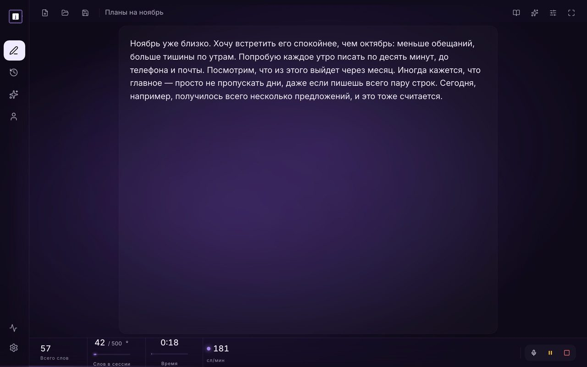
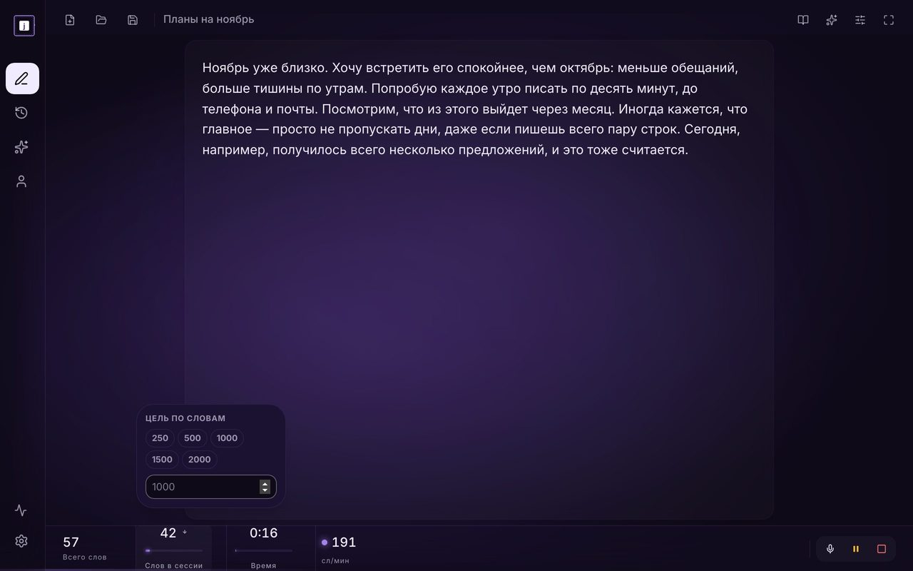
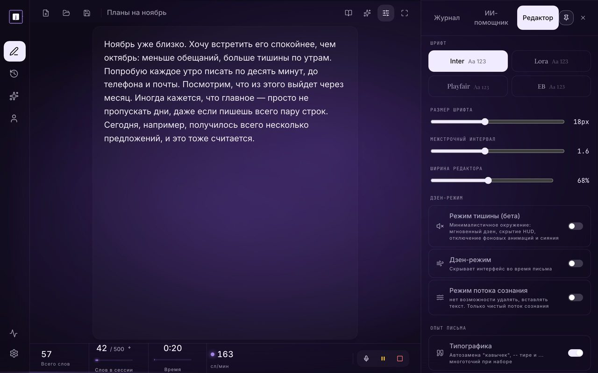
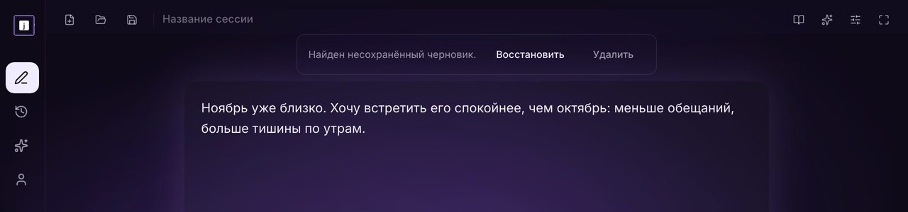
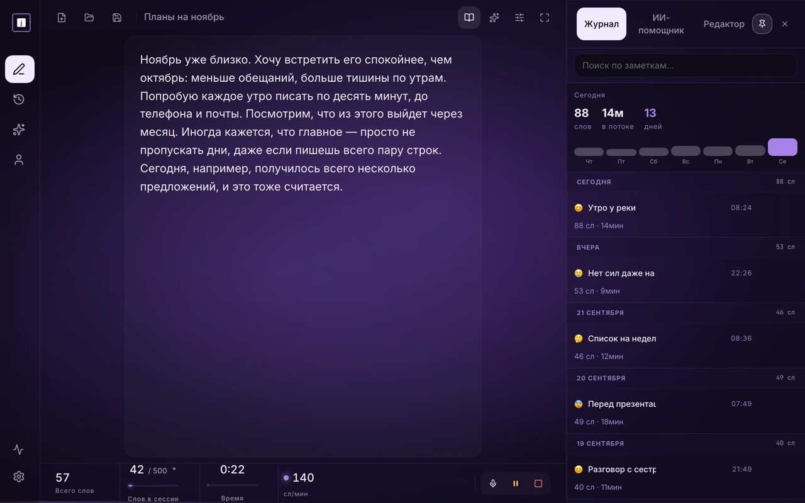
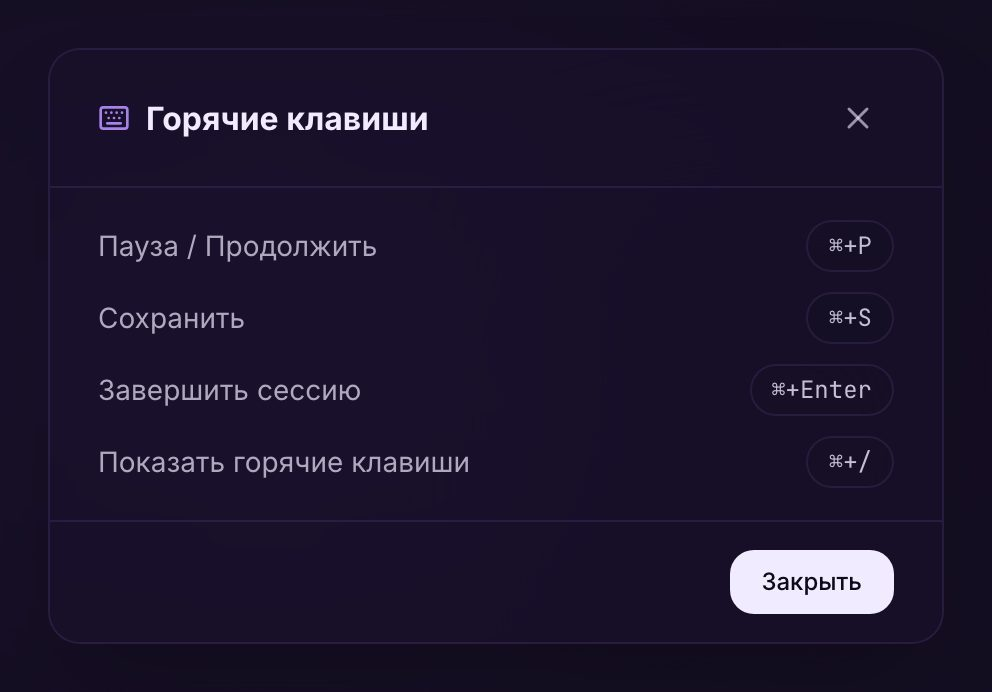

Как писать
Всё об экране письма: как начать сессию, поставить цель, настроить редактор под себя и сохранить написанное как заметку.
На этой странице
Экран письма
Экран письма открывается сразу после входа. В нём три части.
- Шапка. Слева кнопки Новая заметка, Открыть и Сохранить, рядом поле названия. Справа — Журнал (ваши заметки), ИИ-помощник, Редактор (настройки текста и режимов) и Полный экран. Кнопки в шапке — значки без подписей.
- Редактор — поле для текста в центре.
- Нижняя панель — счётчики слов, время, скорость, а справа кнопки микрофона, ▶/⏸ и ■.
Журнал, ИИ-помощник и Редактор открываются в панели справа. Её можно оставить открытой кнопкой Закрепить. Незакреплённая панель закрывается, когда вы щёлкаете в тексте.

Как начать
Просто начните печатать — сессия запустится с первой буквы. Можно и нажать ▶ (Начать) в нижней панели. Обратного отсчёта нет: время идёт сразу.
Пока редактор пуст, в нём видна подсказка дня — вопрос, с которого можно начать, например «Что меня радует прямо сейчас?». Подсказка меняется каждый день. Отвечать на неё не обязательно.
Редактор
Это простой текст без форматирования: ни жирного, ни заголовков, ни списков. Только слова и переносы строк.
- Отмена и повтор. Ctrl (⌘ на Mac) + Z отменяет последнее действие, Ctrl+Shift+Z или Ctrl+Y возвращает. Отменяется кусок текста, набранный без остановки, до паузы в полсекунды или до новой строки. Запоминается до 100 шагов. На паузе отмена не работает.
- Типографика. Пока вы пишете, прямые кавычки превращаются в «ёлочки», три точки — в многоточие (…), два дефиса и дефис между пробелами — в тире (—). Выключить можно в панели Редактор, переключатель Типографика.
- Очень большая вставка. Если вставить текст длиннее 700 000 символов, появится предупреждение: у облака лимит около 700 000 символов, такой текст лучше разбить на части. Заметку больше лимита можно сохранить, но она останется только на этом устройстве.
Название
Название пишется в поле Название сессии в шапке — до 200 символов. Его можно ввести и потом, в окне завершения. Если названия нет, в журнале заметка будет «Без названия», а на странице «Заметки» вместо названия покажется первая строка текста.
Пауза и время
Чтобы прерваться, нажмите ⏸ (Пауза) или Ctrl+P. На паузе текст нельзя менять. Чтобы продолжить, нажмите ▶ или снова Ctrl+P.
Сессия встаёт на паузу сама, когда вы переключаетесь на другую вкладку, сворачиваете браузер или уходите на другую страницу приложения. Время на паузе считается отдельно: в окне завершения оно показано как Отвлечения, а время за письмом — как В потоке.
Часы на нижней панели идут вперёд — это секундомер, а не обратный отсчёт. Считаться вниз они начинают только тогда, когда у сессии стоит цель по времени: тогда видно, сколько осталось. Тип сессии Свободный поток — это «просто секундомер»: пишете сколько угодно, ничего не ограничено.
Цели по словам и времени
Цель помогает не бросить на середине. Есть две цели: сколько слов написать и сколько времени писать.
Цель можно задать сразу в окне письма: нажмите на неё рядом с индикатором сессии. Отдельного стартового экрана «Сколько хочешь писать?» больше нет — приложение открывается сразу в редактор.
Как задать или поменять цель
- Щёлкните в нижней панели по счётчику Слов в сессии (цель по словам) или по времени (цель по времени).
- Выберите готовый вариант: 250, 500, 1000, 1500 или 2000 слов; 15, 25, 30 или 60 минут. Или введите своё число и нажмите Enter.
- Чтобы убрать цель, нажмите Убрать. Закрыть окно без изменений — Esc.

Что происходит при достижении цели
- Цель по словам. Появляется сообщение «Цель по словам достигнута» и звучит короткий звук — один раз за сессию. Счётчик становится зелёным. Писать можно дальше, сессия не останавливается.
- Цель по времени. Таймер показывает, сколько осталось. Когда время выходит, он становится зелёным и пишет «истекло». Ни звука, ни сообщения нет — решайте сами, заканчивать или нет.
Цели по умолчанию
Когда вы открываете приложение, стоят цели 1000 слов и 30 минут. Выбранные вами цели действуют до перезагрузки страницы, в том числе для следующих заметок. Когда вы продолжаете старую заметку или восстанавливаете черновик, целей нет — задайте их заново, если нужно.
Счётчики и скорость
В нижней панели:
- Всего слов — во всём тексте;
- Слов в сессии — сколько написано сейчас, через дробь — цель;
- время — прошедшее или, если есть цель по времени, оставшееся;
- скорость (слов в минуту) — за последнюю минуту письма. Если перестать печатать, она постепенно падает.
Рядом со скоростью стоит точка одного цвета. Оценки скорости цветом или словом нет: это ориентир, а не отметка.
Какие счётчики показывать, выбирается в панели Редактор, раздел Показывать в панели.
Режимы письма
Все режимы включаются в шапке кнопкой Редактор. Их можно сочетать.
| Режим | Что делает |
|---|---|
| Дзен-режим | Включён сразу. Когда вы начинаете писать, шапка, меню и нижняя панель прячутся — остаётся только текст. Пошевелите мышью, и они появятся на 3 секунды; любая клавиша снова их спрячет. |
| Режим тишины (бета) | Строже дзена: всё прячется сразу, а вернуть кнопки можно, только подведя указатель к самому краю экрана. Строка текста становится уже. |
| Режим потока сознания | Нельзя стирать и править: не работают Backspace, Delete, отмена, вырезание, копирование и вставка. Только вперёд. |
| Пишущая машинка | Строка, в которой вы пишете, всегда держится посередине экрана. |
| Фокус-режим | Текст вокруг текущего места приглушён, чтобы не отвлекаться на написанное. |
| Скрытие курсора | Указатель мыши исчезает, пока вы печатаете. |
Чтобы убрать с экрана вообще всё, включите ещё и Полный экран кнопкой в шапке.
Шрифт, тема, язык
Там же, в панели Редактор:
- Шрифт — Inter, Lora, Playfair или EB Garamond;
- Размер шрифта — от 14 до 24;
- Межстрочный интервал — от 1,2 до 2,2;
- Ширина редактора — какую часть экрана занимает текст;
- Дизайн — цветовая тема. Системная следует за светлой или тёмной темой компьютера;
- Язык — язык интерфейса.
Смена темы перекрашивает всю страницу одним плавным переходом — за треть секунды вместе с фоном перетекают карточки, границы, боковое меню и градиент. Если в системе включено «уменьшить движение» (reduce motion), перехода нет: тема меняется сразу.
Язык интерфейса меняется сразу во всех открытых вкладках этого браузера — не нужно обновлять каждую.

Голосовой ввод
Можно надиктовать текст: нажмите кнопку микрофона в нижней панели и говорите. Речь распознаёт сам браузер, поэтому нужен интернет и разрешение на доступ к микрофону — браузер спросит его при первом включении.
Диктовка — одна запись. Пока вы говорите, в редакторе видно распознаваемый текст и волну голоса; кнопки Стоп и Отмена на нижней панели. Стоп вставляет всё сказанное в заметку, Отмена выбрасывает запись, и в тексте ничего не появляется.
Знаки препинания после «Стопа»
Голосом люди не ставят точки и запятые, поэтому после Стопа ИИ расставляет знаки в надиктованном: появляются точки, запятые, заглавные буквы и абзацы. Кнопка микрофона помечена значком ИИ, а перед первой такой обработкой приложение предупреждает: уйдёт один запрос дневного лимита (см. «Сколько запросов в день» в разделе про ИИ).
Слова при этом не меняются — только знаки между ними. Если ИИ всё-таки тронет хоть одно слово (исправит оговорку, склеит два слова), весь результат отбрасывается, а текст остаётся как был: приложение вставляет сырое распознавание и коротко скажет, что слова изменились. Так же без расстановки знаков обходится, если вы не вошли в аккаунт или не давали согласия на ИИ: текст вставляется точно как сказан, и запрос никуда не идёт.
Кнопка Расставить знаки в панели ИИ-помощника для этого не нужна: её убрали, когда расстановку привязали к диктовке. Отдельного вызова «расставить знаки по всей заметке» в приложении больше нет.
Если прервалась запись
Микрофон выключается, когда вы уходите с экрана письма посреди диктовки, — надиктованное не попадёт в другую заметку. Если запись уже остановлена и текст некуда вставить, приложение покажет его в окне, откуда можно скопировать.
Если браузер сам оборвал запись — забрал микрофон другой вкладкой или пришло уведомление, — приложение не включает микрофон заново: сказанное сохраняется в заметке, а продолжить нужно нажатием на кнопку микрофона. Без вашего нажатия запись не начинается.
Текст, надиктованный до первой напечатанной буквы, считается в запись: он входит и в число слов сессии, и в статистику профиля.
Автосохранение и черновики
Пока вы пишете, текст сам сохраняется как черновик: в браузере на этом устройстве — почти сразу после каждой остановки, а если включена автосинхронизация, копия в облаке обновляется примерно раз в 30 секунд. Нажимать ничего не нужно.
Черновик — это ещё не заметка. Заметкой текст становится, только когда вы его сохраните. Черновик, который не правили 7 дней, может быть удалён — сохраните его, чтобы текст остался.
Если приложение нашло несохранённый черновик, при следующем открытии он обычно сам окажется в редакторе. Иногда вместо этого сверху появляется Найден несохранённый черновик. с двумя кнопками:
- Восстановить — загрузить черновик в редактор. То, что уже есть в редакторе, заменится черновиком.
- Удалить — стереть сохранённую копию черновика. Текст, который сейчас в редакторе, останется.

Завершить и сохранить
Когда закончили, откройте окно завершения одним из способов:
- кнопка ■ (Стоп) в нижней панели;
- кнопка Сохранить в шапке;
- Ctrl+Enter.
Пока окно открыто, сессия стоит на паузе. Всё делается в одном окне.
Окно завершения
Заголовок — одна строка о том, что получилось, например «Записано 250 слов за 12 минут». В режиме Писать без цифр и когда слов нет — просто «Записано.». Ниже:
- Серия — сколько дней подряд вы пишете, включая сегодня. Если серии нет, будет «Начни сегодня!».
- Итоги — слов за сессию (и всего в тексте), время, средняя скорость и примерное время чтения. Если были паузы — В потоке и Отвлечения. Если писали подольше, будет ещё график скорости. В режиме Писать без цифр серии и итогов нет.
- Название — можно ввести или поправить.
- Метки — ваши цветные метки, щелчком выберите нужную. Блок виден, только если вы уже завели метки на странице «Заметки».
- Теги — приложение предлагает несколько тегов по названию и тексту, щёлкните, чтобы добавить. Свой тег вводится в поле Добавить тег... и добавляется по Enter. До 10 тегов, каждый до 50 символов.
- Как ты себя чувствуешь? · по желанию — настроение одним из шести эмодзи: радость, грусть, злость, страх, отвращение или интерес. Повторный щелчок снимает выбор.
На телефоне итоги (Скорость по времени), название с метками и теги свёрнуты — нажмите на заголовок блока, чтобы раскрыть.
Внизу четыре кнопки:
- Сохранить — сохранить заметку. Если в тексте нет ни одного слова, кнопка неактивна.
- Обсудить с ИИ — сохранить и сразу открыть разговор о ней с ИИ (см. ИИ-собеседник и разбор).
- Вернуться к тексту — закрыть окно и писать дальше; сессия снова пойдёт. То же делают Esc и щелчок мимо окна.
- Сохраню позже — просто закрыть окно. Ничего не сохраняется и не удаляется: текст остаётся в редакторе, сессия — на паузе.
После сохранения
Редактор очищается, и можно писать следующую заметку. Цели остаются прежними. Внизу появится одно из сообщений:
| Сообщение | Что значит |
|---|---|
| «Заметка сохранена» | Всё в порядке: заметка сохранена и отправлена в облако. |
| «Заметка сохранена на этом устройстве» | Автосинхронизация выключена или вы пишете без входа в аккаунт. Заметка есть только в этом браузере, сама в облако она не уйдёт. Подробнее — в разделе Облако и устройства. |
| «Сохранено на этом устройстве — в облако отправится позже» | Автосинхронизация включена, но сейчас нет сети или сейф заперт. Заметка сохранена в браузере и уйдёт в облако сама, когда появится возможность. |
| «Заметка сохранена только на этом устройстве: слишком большая для облака…» | Текст длиннее примерно 700 000 символов. Заметка есть только в этом браузере. Чтобы она попала в облако, разбейте её на части. |
| «В облаке уже была более новая версия. Ваша сохранена отдельно: «…»» | Эту заметку успели изменить на другом устройстве. Ничего не потеряно: ваш вариант сохранён отдельной заметкой с указанным названием. |
| «Не удалось сохранить. Попробуй ещё раз.» | Сохранить не получилось. Текст не пропал — попробуйте сохранить ещё раз. |
Новая заметка и отмена сессии
Кнопка Новая заметка в шапке очищает редактор, чтобы начать с чистого листа. Если в редакторе есть текст, сначала появится вопрос Отменить сессию?: Удалить стирает текст и черновик, Назад оставляет всё как есть.
Продолжить старую заметку
К сохранённой заметке можно вернуться и дописать её.
- Нажмите Журнал в шапке. Справа откроется список заметок с поиском и статистикой за сегодня.
- Найдите заметку и щёлкните по ней или по кнопке Продолжить.
- Текст, название и теги загрузятся в редактор. Начните печатать — сессия пойдёт.
То же можно сделать со страницы «Заметки»: откройте заметку и нажмите Продолжить писать.
Каждое сохранение после продолжения добавляет заметке новую версию. Сама заметка одна, а в списке видно, сколько у неё версий.
Сколько нового вы написали, считается по фактическому тексту заметки, а не по прежней «самой длинной» отметке: если заметку до вас сокращали, добавленные слова всё равно попадут в счётчик сессии и в статистику дня. Про саму цифру слов у заметки — см. «Сколько слов считается» в разделе «Облако и устройства»: это наибольшая длина, которую заметка когда-либо имела, а не её текущая длина.

Горячие клавиши
На Mac вместо Ctrl нажимайте ⌘.
| Клавиши | Что делают |
|---|---|
| Ctrl+Enter | Завершить сессию (открыть окно сохранения) |
| Ctrl+P | Пауза / продолжить |
| Ctrl+/ | Показать список горячих клавиш |
| Ctrl+Z | Отменить |
| Ctrl+Shift+Z или Ctrl+Y | Повторить |
| Esc | Закрыть окно цели или диалог |
| Любая буква | Начать сессию, если она ещё не идёт |

Если закрыли вкладку посреди письма
Если сессия идёт или стоит на паузе, браузер переспросит, точно ли вы хотите уйти со страницы. Но даже если вкладка закрылась, текст не пропадёт: он уже сохранён как черновик.
Когда вы снова откроете приложение, черновик окажется в редакторе или появится Найден несохранённый черновик. — см. Автосохранение и черновики. Сессия начнётся заново, когда вы начнёте печатать; уже потраченное время сохранится, а цели нужно будет задать снова.